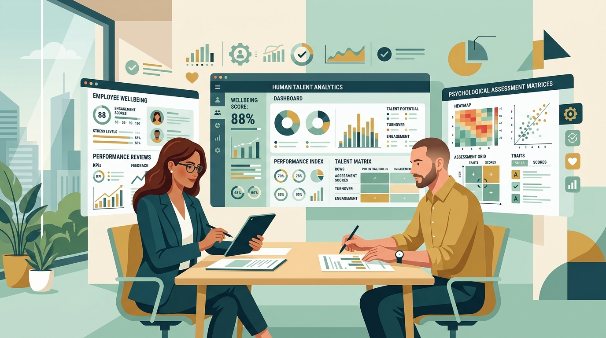

Evaluación & Talento

🔍 Clic para ampliarEvaluación Integral del Talento
Análisis interdisciplinario que combina métricas de rendimiento, bienestar subjetivo y rigor normativo para garantizar una gestión humana justa y transparente.